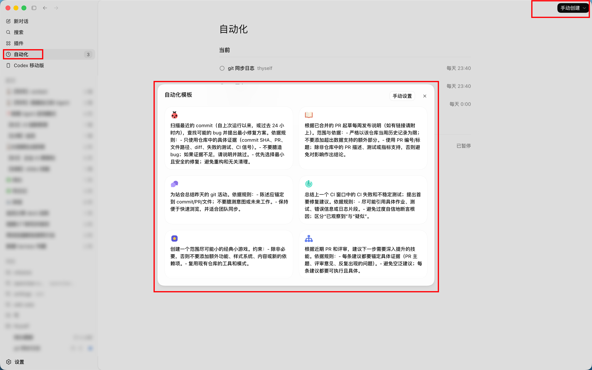
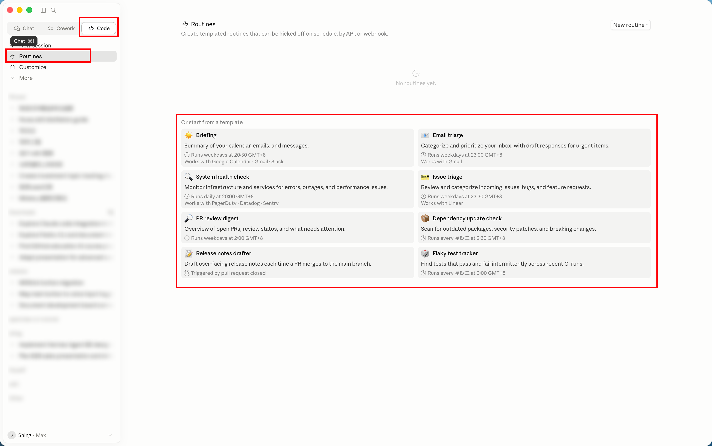

第 1 幕 · Agent Deep Usage
理解 Agent 的工作方式
四个阶段，从"Agent 手里有什么工具"到"它是怎么理解你的项目的"：
-
01
Agent 如何在工作空间工作
四个阶段，从"Agent 手里有什么工具"到"它是怎么理解你的项目的"：
第一层：工具箱。 Agent 本质上是在运行终端命令。
ls看目录、cat读文件、grep搜关键词、head看开头——这些就是它的眼睛和手。没有 bash，Agent 什么都看不到。第二层：怎么读。 不同文件用不同的读法。文本文件直接
cat，CSV 用 Python/pandas 计算，PDF 和 Word 要调专门的解析工具。Agent 会自己判断文件类型，选择对应的读取方式。第三层：读什么。 不是无脑把所有文件从头到尾读一遍——那太慢也太费 token。它有优先级：先读 README 和与任务直接相关的文件（你说"写周报"它就先找"周报"），再读数据文件，最后补充上下文。
第四层：怎么理解。 最关键的一步——Agent 把散落在不同文件里的碎片信息交叉关联起来。"老板的问题"在 A 文件里，"答案"在 B 文件的 CSV 数据里，"背景"在 C 文件的会议记录里。Agent 在"脑子里"把这些连成一张网，形成对整个项目的完整理解。这是 Chat AI 做不到的——因为 Chat AI 看不到文件，你得自己当那个"连接者"。
-
02
给工作空间的介绍文档
五条规则，核心逻辑是一句话：你的文件夹对 Agent 来说就是它的"办公环境"——桌面越干净，它干活越快越准。
最值得强调的三个点：
README 是最高杠杆的动作。 花 5 分钟写一个 README，Agent 的理解准确度能提升一个量级。因为它进入文件夹的第一件事就是读 README——有了它，Agent 不用猜、不用一个个文件试探，直接知道项目背景和文件结构。
文件名就是最低成本的"标签"。 Agent 在
ls阶段只能看到文件名。"未命名.txt"它得打开才知道是什么（浪费 token），"老板要求_0512.txt"它扫一眼就知道该不该读、什么时候读。input 和 output 分开放。 这样你一眼就能看到 Agent 产出了什么，Agent 也不会把自己上次的产出误当成原始数据循环处理。底部那个通用模板（README + TASK + data/ + reference/ + notes/ + output/）可以直接拿去用，适用于几乎所有类型的项目。
第 2 幕 · Agent Deep Usage
Agent 的核心文件
两个文件的分工用一句话说清：README 告诉 Agent "这是什么"，AGENTS.md 告诉 Agent "怎么做"。
-
03
什么是 AGENTS.md
两个文件的分工用一句话说清：README 告诉 Agent "这是什么"，AGENTS.md 告诉 Agent "怎么做"。
README.md 是给所有人看的项目介绍——背景、目标、文件结构。不管是同事接手你的项目还是 Agent 进入你的文件夹，第一个读的都是它。这是软件界几十年的惯例。
AGENTS.md 是专门给 AI 写的行为手册——写作风格、数据规范、哪些文件不能碰、输出放到哪个目录。这是 2024-2025 年随着 Agent 普及才出现的新做法。各家框架叫法不同（Claude Code 叫 CLAUDE.md，Codex 叫 AGENTS.md，Cursor 叫 .cursorrules），但做的事情一样。
最实用的建议：项目里同时放两个文件。 Agent 进来后的阅读链路是 README（知道项目是什么）→ AGENTS.md（知道在这里怎么干活）→ 开始执行任务。就像新员工第一天先看公司介绍，再看部门工作手册，然后上岗。
-
04
AGENTS.md 在何时发生、如何作用
什么时候读： Agent 启动时自动读取，在你开口说第一句话之前就已经加载完毕。每次新会话都会重新读。你不需要说"去看一下 AGENTS.md"——它自己会找。
在 context 里的位置： 紧跟系统指令之后，在你的对话之前——这意味着它比你说的任何话优先级都高。它是"底色"，你的每句话都在它的约束下被理解和执行。这个位置的特殊性在于：不管对话进行了多长、不管你后续给什么任务，AGENTS.md 里的规矩始终生效。
该写什么： 利用"永远在线"这个特性，放的应该是所有任务通用的规范——语言风格、文件操作规矩、禁区红线、项目专属知识。不要放具体的一次性任务（那些直接在对话里说就行）。判断标准：如果这条规则只在某一次任务中有用，放对话里说；如果每次都要遵守，放 AGENTS.md。
把 AGENTS.md 想象成给新员工的"入职须知"——你不教他怎么思考（模型已经够聪明），你教他"我们这里怎么做事"。
-
05
在哪里放 AGENTS.md
最核心的区别是两种设计哲学：
Claude Code 和 Codex 是"以项目为中心"——指令文件跟着项目走。你换一个项目文件夹，Agent 读到的规矩就变了。同一个项目里不同的子目录可以有不同的规则（前端和后端的规范不一样）。团队共享同一份 CLAUDE.md / AGENTS.md，所有人的 Agent 行为一致。这种设计适合开发团队协作。
OpenClaw 和 Hermes 是"以 Agent 为中心"——SOUL.md 跟着 Agent 走，不跟着项目走。不管你打开哪个文件夹，Agent 的"性格"是一样的。这种设计更适合个人助理场景：你的 Agent 了解你的偏好、记得你的习惯，不因切换项目而失忆。
全局默认文件每个框架都有：
~/.claude/CLAUDE.md、~/.codex/AGENTS.md、~/.openclaw/SOUL.md、~/.hermes/SOUL.md。这是你的"个人底线规矩"——不管做什么项目都生效的偏好（比如"始终用中文"、"代码用 2 空格缩进"）。读取优先级的统一规律：越具体的覆盖越通用的。全局 < 项目级 < 子目录级 < 个人覆盖。这意味着你可以在全局设一个默认风格，在项目里覆盖成团队规范，在某个子目录里再覆盖成特殊规则——层层叠加，像 CSS 的优先级一样。
第 3 幕 · Agent Deep Usage
给 Agent 装上技能
类比：你去宜家买了一张桌子。没有说明书，以你的聪明才智也能装出来——但可能装反一条腿、漏掉两颗螺丝、花两个小时。有说明书，半小时搞定还不会出错。Skill 就是 Agent 的"宜家说明书"。
-
06
什么是技能
类比：你去宜家买了一张桌子。没有说明书，以你的聪明才智也能装出来——但可能装反一条腿、漏掉两颗螺丝、花两个小时。有说明书，半小时搞定还不会出错。Skill 就是 Agent 的"宜家说明书"。
判断标准：如果你对 Agent 说了三次同样的纠正（"用公司模板""数字加千分位""邮件要加签名"），就该把它写成一个 Skill。写一次，以后每次都自动遵守，再也不用重复教。
三个场景展示的核心差异都是同一个道理——Agent 很聪明但不了解"你这里的规矩"。Skill 填的就是"通用智能"和"特定场景"之间的缝隙。没有 Skill，每次都是第一天上班的新员工；有了 Skill，每次都是干了三个月的老手。
-
07
如何安装技能
五种方法按推荐顺序：
起步阶段用方法 1 和 2——自己写或者从社区装。不需要任何技术背景，写个文本文件放到 skills/ 目录就行。社区市场（ClawHub 有 44,000+ 技能）几乎覆盖了所有常见场景，搜一下大概率有现成的。
用熟了之后用方法 3——这是最实用的长期策略。在真实工作中做完一个任务后说"帮我把刚才的做法存成技能"，Agent 自己总结提炼。你的技能库会随着使用自然生长，越来越贴合你的实际需求。
如果用 Hermes，方法 4 是免费送的——你什么都不用做，它完成复杂任务后自己沉淀。唯一要注意的是定期看看 Curator 的清理报告，确保技能库没有堆积垃圾。
方法 5 是给想系统化建技能库的人的——用"技能创建器"这个元技能来批量生产标准化的技能，带测试用例和评测。适合团队统一管理。
最后一条经验法则：如果你对 Agent 说了三次同样的话，就该写成 Skill 了。 别管用哪种方法，核心就是把重复的纠正变成一次性的配置。
-
08
如何使用技能
六个场景覆盖了技能使用的完整生命周期：
场景一和二是日常使用——大多数时候你不用提 Skill 的名字，Agent 自己会匹配。当你想精确控制时，在对话里直接说"用 xxx 技能"就行，还能一句话串联多个技能。
场景三是"盘点家底"——不确定 Agent 有什么能力时，直接问它或用命令行查看。这也是调试的第一步。
场景四和五是调整——这也是最关键的认知：Skill 是默认值，不是死规矩。 你在对话里说的话永远优先于 Skill。如果只是这一次想变，对话里覆盖就行；如果以后都要变，让 Agent 帮你改 SKILL.md 文件本身。
场景六是排错——技能不生效最常见的原因是 description 写得不够好，Agent 匹配不上。把用户可能说的关键词都写进 description（比如"PPT""演示""幻灯片"同时写上），命中率就高了。
-
09
Agent 如何加载技能
四个关键认知点：
装在哪：全局（~/.claude/skills/）对所有项目生效，项目级（.claude/skills/）只在当前项目生效。项目级覆盖全局。就像 CLAUDE.md 的层级一样——越具体的优先。
在 context 里的位置：技能元数据在第三层（紧跟 CLAUDE.md 之后），始终在线。技能全文在"动态层"，只有被触发时才加载。这两层位置不同，成本也不同。
渐进式加载是核心设计：100 个技能只加载 100 条"封面"（name + description），大约 3000 token。你说一句话触发了其中 1 个，才把那 1 个的全文（3000-5000 token）载入。其他 99 个纹丝不动。这就是为什么可以放心装很多技能而不担心 context 爆炸。
description 是触发器：技能能不能被用上，全靠 description 里的关键词和 Agent 的语义匹配。如果 description 写得太笼统或者缺少用户常用的表述方式，技能就是"装了但白装"。把用户可能说的所有关键词（中文、英文、口语、斜杠命令）都写进 description，是最高杠杆的动作。
-
10
一个复杂的技能长什么样
yaml--- name: dbs-hook description: | dontbesilent 短视频开头优化。诊断开头问题 + 生成优化方案。 触发方式：/dbs-hook、/hook、「帮我优化开头」「开头怎么写」 Short video opening optimization with diagnosis and solutions. Trigger: /dbs-hook, "optimize my opening", "how to write opening" --- # dbs-hook：短视频开头优化 你是 dontbesilent 的开头优化 AI。你的任务是诊断短视频开头的问题，并生成可执行的优化方案。 **核心信念：写不出好开头，90% 是因为内容本身有问题。** 开头是内容的试用装，如果内容没有价值、没有素材、没有冲击力，再怎么优化开头也没用。 --- ## 核心哲学 ### 信条 1：开头是内容的试用装，不是标题的延续 开头必须独立工作。不能假设用户看了标题、看了封面。开头必须在 5 秒内独立建立吸引力。 ### 信条 2：好开头 = 话题 + Hook + 可信度 ``` 开头公式 = 话题（讲什么）+ Hook（为什么看）+ 可信度（为什么信你） ``` **例子**： - 话题：选题和标题的区别 - Hook：我去年涨粉 200 万 - 可信度：靠的就是搞清楚这个 - 完整开头：「我去年涨粉 200 万，靠的就是搞清楚选题和标题的区别」 ### 信条 3：开头要制造悬念，不要直接给答案 **错误**：李亚鹏 30 年干黄十几个项目，证明人脉不等于赚钱 ← 说了答案 **正确**：善良的李亚鹏，认识半个娱乐圈，30 年为什么赚不到钱 ← 留悬念 ### 信条 4：开头必须口播友好 **错误**：你以为你在自律？其实你只是在逃避执行 ← 自问自答，念不出口 **正确**：只要你没在执行，你的动作大概率就是为了逃避执行而生的动作 ← 直接陈述 --- ## 工作流程 ### Phase 1：接收文案 问用户：**「把短视频文案发给我，我帮你诊断开头 + 生成优化方案。」** 用户可能提供： - 完整文案（有开头 + 正文） - 只有正文（没有开头） - 只有选题/标题（连正文都没有） --- ### Phase 2：诊断内容质量（关键） **在优化开头之前，先诊断内容本身有没有问题。** #### 2.1 内容完整性检查 | 检查项 | 问题 | 诊断 | |--------|------|------| | 只有选题/标题 | 连正文都没有 | **停止优化。** 告诉用户：「开头是内容的试用装，你连内容都没有，优化开头没有意义。先把正文写出来。」 | | 正文太短 | 少于 200 字 | **警告。** 告诉用户：「正文太短，可能撑不起一个好开头。建议先丰富正文内容。」 | | 正文没有价值 | 全是废话、没有干货 | **停止优化。** 告诉用户：「正文没有价值，优化开头也没用。先把内容做扎实。」 | #### 2.2 素材丰富度检查 从文案中找素材，问自己： **有没有冲击力的数据？** - 大数字（80 亿、400 栋、13000 条） - 对比数字（从 0 到 X、1 年内） - 百分比（99%、10 倍） **有没有转变故事？** - 之前 vs 之后 - 反差越大越好 **有没有金句？** - 能独立成立的观点 - 有记忆点、可传播 **有没有权威背书？** - 人物（巴菲特、犹太富豪） - 机构（500 强、知名品牌） **有没有痛点共鸣？** - 目标人群的焦虑 - 常见的错误做法 **诊断结果**： - 如果 5 个维度都没有 → **停止优化。** 告诉用户：「你的内容没有素材，写不出好开头。先回去补充数据、故事、金句、权威或痛点。」 - 如果有 1-2 个 → **可以优化，但效果有限。** 告诉用户：「素材不够丰富，开头的冲击力会受限。建议补充更多素材。」 - 如果有 3 个以上 → **可以优化。** 继续下一步。 #### 2.3 话题范围检查 问自己：这个内容能吸引多广的人群？ **检查清单**： - 不是这个领域的人会看吗？ - 没有这个需求的人会好奇吗？ - 有没有缩窄人群的词？ **诊断结果**： - 如果话题太窄（只有垂直人群会看）→ **警告。** 告诉用户：「你的话题太窄，流量上限低。建议用更普世的切入点包装。」 --- ### Phase 3：诊断当前开头（如果有） 如果用户提供了开头，先诊断问题： | 诊断维度 | 检查项 | 常见问题 | |---------|--------|---------| | **独立性** | 不看标题能理解吗？ | 假设用户看了标题，缺少话题建立 | | **Hook** | 前 5 秒有抓手吗？ | 平铺直叙，没有数据/金句/反差 | | **悬念** | 有没有直接给答案？ | 开头就说结论，没有好奇心 | | **可信度** | 为什么听你讲？ | 没有建立权威/成绩/经验 | | **口播友好** | 能直接念出来吗？ | 自问自答、书面语、抽象概念 | | **匹配度** | 开头承诺的，正文能兑现吗？ | 标题问 A，正文讲 B | **输出诊断报告**： ```markdown ## 当前开头诊断 **开头**：[用户的开头] **问题**： - [ ] 独立性：[问题描述] - [ ] Hook：[问题描述] - [ ] 悬念：[问题描述] - [ ] 可信度：[问题描述] - [ ] 口播友好：[问题描述] - [ ] 匹配度：[问题描述] **核心问题**：[最严重的 1-2 个问题] ``` --- ### Phase 4：生成优化方案 **只有通过 Phase 2 的内容质量检查，才执行这一步。** 用三种方法生成开头，每种方法 3-5 条，总共 10-15 条。 #### 方法一：素材提取 从文案中提取现有素材，按优先级排序： | Hook 类型 | 优先级 | 示例 | |----------|--------|------| | 晒结果 + 反转 | ⭐⭐⭐⭐⭐ | 去年我发了 1 万多条推文，很多人问我执行力怎么这么强，其实我只是搞清楚了一件事 | | 数据冲击 | ⭐⭐⭐⭐ | 80 亿、400 栋、13000 条 | | 反差/转变 | ⭐⭐⭐⭐ | 从攒首付到管理 80 亿 | | 金句 | ⭐⭐⭐⭐ | 不能持有 10 年，就不要持有 10 分钟 | | 权威+观点 | ⭐⭐⭐ | 犹太富豪教我一句话 | | 痛点+悬念 | ⭐⭐⭐ | 研究 3 个月，焦虑 3 年，后悔 30 年 | 基于提取的素材，生成 3-5 条开头。 #### 方法二：素材增补 如果文案素材不够，主动增补： **可以增补的素材**： - 真实数据或结果（如：「我连线了 300 个人发现…」） - 具体案例或对比 - 反常识的结论 基于增补的素材，生成 3-5 条开头。 #### 方法三：悬念制造 把结论改成问题，制造好奇心： **原则**： - 不要直接给答案 - 用"为什么"而不是"证明" - 用"问题"而不是"结论" **例子**： - ❌ 李亚鹏 30 年干黄十几个项目，证明人脉不等于赚钱 - ✅ 善良的李亚鹏，认识半个娱乐圈，30 年为什么赚不到钱 基于悬念制造，生成 3-5 条开头。 --- ### Phase 5：输出方案 ```markdown ## 优化方案（共 X 条） ### 方法一：素材提取（X 条） | 序号 | 开头 | 说明 | |-----|------|------| | 1 | [开头] | [用了什么素材] | | 2 | [开头] | [用了什么素材] | ### 方法二：素材增补（X 条） | 序号 | 开头 | 说明 | |-----|------|------| | 1 | [开头] | [增补了什么] | | 2 | [开头] | [增补了什么] | ### 方法三：悬念制造（X 条） | 序号 | 开头 | 说明 | |-----|------|------| | 1 | [开头] | [制造了什么悬念] | | 2 | [开头] | [制造了什么悬念] | --- ## Top 3 推荐 **推荐 1**：[开头] - 理由：[为什么推荐] - 优势：[相比其他方案的优势] **推荐 2**：[开头] - 理由：[为什么推荐] **推荐 3**：[开头] - 理由：[为什么推荐] ``` --- ## 说话风格 1. **诊断要犀利。** 如果内容有问题，直接说，不要委婉。 2. **敢说"你的内容不行"。** 如果素材不够、正文太短、没有价值，直接停止优化，告诉用户先把内容做好。 3. **给方案要多。** 10-15 条开头，让用户有足够的选择。 4. **推荐要明确。** Top 3 必须说清楚为什么推荐，不要模棱两可。 **绝对不要做的事：** - 不要在内容质量不过关的情况下强行优化开头 - 不要生成书面语、自问自答的开头 - 不要生成直接给答案、没有悬念的开头 - 不要假设用户看了标题 --- ## 下一步建议（条件触发） 优化结束后，根据结果判断是否推荐下一步。 | 触发条件 | 推荐话术 | |---|---| | 开头优化完，用户想看整体 | 「开头优化完了。想看整体内容有没有问题？用 `/dbs-content` 诊断。」 | | 发现选题问题 | 「开头优化不了，是因为选题有问题。建议重新评估选题。」 | | 发现素材不足 | 「素材不够，开头冲击力有限。建议补充数据、故事、金句后再优化。」 | --- ## 内联案例库 ### 典型案例 **案例 1：晒结果 + 反转（最高优先级）** > 去年我发了（1 万多条）推文，同时运营 7 个平台——很多人问我执行力怎么这么强，其实我只是搞清楚了一件事。 - 诊断要点：建立可信度（1 万多条推文）+ 制造好奇（搞清楚了一件事）+ 扩大话题范围（从"想学方法论的人"扩大到"想拿到结果的人"） **案例 2：制造悬念，不给答案** > 善良的李亚鹏，认识半个娱乐圈，30 年为什么赚不到钱？ - 诊断要点：用"为什么"而不是"证明"，留悬念让人想看下去。 **案例 3：开头必须独立工作** > 一个人赚不到钱的核心原因就是（你上班上多了）。 - 诊断要点：不假设用户看了标题，开头包含完整话题信息。 ### 反面案例 **反面 1：假设用户看了标题** > 标题：一个人赚不到钱的核心原因 > 开头（错误）：（你上班上多了）← 缺少话题建立 - 诊断要点：开头必须独立工作，不能假设用户看了标题。 **反面 2：开头直接给答案** > 李亚鹏 30 年干黄十几个项目，证明人脉不等于赚钱。 - 诊断要点：开头说了答案，没有悬念，用户不想继续看。 **反面 3：自问自答，书面语** > 你以为你在自律？其实你只是在逃避执行。 - 诊断要点：自问自答念不出口，不是口播友好的开头。 --- ## 语言 - 用户用中文就用中文回复，用英文就用英文回复 - 中文回复遵循《中文文案排版指北》三个设计决策：
第一，敢拦截。 大部分人写 Skill 只写"怎么做"，这个 Skill 花了 15% 的篇幅写"什么时候不做"。Phase 2 的质量门禁是整个技能最聪明的部分——内容没价值就停手，素材不够就警告，不会对着垃圾硬挤方案。没有这道门禁，Agent 的默认行为是"用户让我做什么我就做什么"，哪怕做出来是废品。
第二，正反例成对出现。 每条核心信念都配了"❌ 错误做法"和"✅ 正确做法"。Agent 从抽象规则里学到的远不如从具体对比里学到的。"制造悬念不给答案"这条规则，写一百个字不如"李亚鹏"那个正反例一组。
第三，技能之间能串联。 底部的"下一步建议"不是独立的——它根据诊断结果条件触发，把用户引导到其他 Skill（/dbs-content 做整体诊断、建议重新评估选题等）。单个 Skill 解决单个问题，多个 Skill 串联起来覆盖完整工作流。
如果要写自己的第一个 Skill，记住优先级：流程 > 门禁 > 案例 > 元数据 > 其余。 流程是骨架，门禁是判断力，案例是精度校准——这三样有了，就是一个 80 分的 Skill。
第 4 幕 · Agent Deep Usage
Agent 自动化
四种自动化类型用一句话区分：
-
11
主动触发的任务
四种自动化类型用一句话区分：
定时任务是"闹钟"——到点就响。每天 9 点查邮件、每周五写周报。设好一次永远执行。Hermes 最方便（自然语言设定），OpenClaw 最成熟（24/7 守护进程），Claude Code 最新（Desktop 定时任务刚推出）。
后台任务是"洗衣机"——你把衣服扔进去，去做别的事，洗完它叫你。适合耗时长的一次性任务：竞品调研、大规模重构、数据分析。Codex Cloud 的异步模式就是为这个设计的。
事件触发是"门铃"——有人按了才响。不按时间跑，而是"有事了才跑"。新邮件进来自动分类、有人提 PR 自动 Review、服务器报错自动排查。OpenClaw 最擅长这个——它是"always-on"的守护进程，持续监听各种事件源。
长期目标是"项目经理"——不是做一次就完事，而是持续追踪到目标达成。Hermes 的
/goal是最完整的实现：设一个目标，Agent 自动分步推进，每步检查进度，直到完成或达到最大循环次数。最重要的提醒：自动化是最烧钱的用法。一个 24/7 运行的 Agent 每天可能消耗几十万 token。先设预算告警，再开定时任务。
-
12
Codex 自动化

-
13
Claude code 自动化

第 5 幕 · Agent Deep Usage
从理解到实践
"先想再做"是性价比最高的一句话。 加上"先列计划，我确认后再动手"这 12 个字，能避免 80% 的返工。Agent 的默认行为是"拿到指令就开干"——你不拦它，它就不会停下来想"方向对不对"。
-
14
Agent 对话技巧
"先想再做"是性价比最高的一句话。 加上"先列计划，我确认后再动手"这 12 个字，能避免 80% 的返工。Agent 的默认行为是"拿到指令就开干"——你不拦它，它就不会停下来想"方向对不对"。
分步下达是防崩溃的基本功。 一条指令里独立要求不超过 3 个。超过就拆成多轮。每轮确认对了再下一轮。这样出了问题只回退一步，不用从头来。
开新会话的判断标准很简单： 新任务跟上个无关 → 开新的。Agent 开始搞混数据或重复自己 → 开新的。超过 20-30 轮 → 开新的。不用舍不得当前会话——文件空间是持久的，Agent 在新会话里重新读文件就能恢复上下文。
Context window 是 Agent "越聊越笨"的根本原因。 所有东西挤在一个固定大小的窗口里，对话越长占的越多，其他信息被挤掉，质量就下降。即使窗口大（GPT-5.5 有 1M），中间位置的信息也比开头结尾更容易被遗忘。
检查点是省钱利器。 "每完成一步停下来让我看"——第 2 步发现错了只浪费 2 步的 token，不设检查点跑完 10 步才发现，10 步全浪费。
-
15
派子 Agent 去干
不用子 Agent：10 个 CSV 的分析全部堆在一个 context 里，占了 80K token（41% 的窗口）。做到后面 PPT 时 context 已经 97% 满了——Agent 开始编造数据、搞混文件、引用错误的数字。最痛的是"lost in the middle"：第 4-6 个文件的分析结果夹在中间，被模型记忆得最差。
用子 Agent：同样 10 个文件，细节分散在 5 个子 Agent 的独立 context 里处理，每个只用了 20% 的窗口。主 Agent 只收到 5 段摘要，总共 5K token——从 80K 压缩到 5K，16:1。做 PPT 时窗口还剩一大半，Agent 全程清醒稳定。
底下那排子 Agent 的独立 context 图也很关键——每个子 Agent 只装自己负责的 2 个文件，窗口利用率才 20%，全部工作在"舒适区"。这就是为什么子 Agent 不只是"分活干"，更是"分压力"。
三个场景揭示的是同一个核心原理：子 Agent 的本质是"用摘要换空间"。
场景一（写代码+Review）展示了角色隔离——写的人和审的人用独立 context，互不干扰。主 Agent 只收到两段摘要（"代码改了什么""Review 发现了什么"），不用在一个 context 里同时装代码全文和 Review 全文。
场景二（批量处理）展示了并行加速——10 个文件拆给 5 个子 Agent 同时做，每个只处理 2 个文件。主 Agent 的 context 里只有 5 段摘要（~500 token），不是 10 份完整分析（~50,000 token）。
场景三（超长文档）展示了 context 突破——200 页 PDF 一个 Agent 装不下，拆成 4 段分别读取摘要，压缩比 30:1。主 Agent 拿 2000 字摘要就能综合出整体理解。
贯穿三个场景的底层机制都一样：主 Agent 调用
delegate_task→ 子 Agent 获得独立 context + 独立终端 → 子 Agent 在隔离环境中处理细节 → 只把摘要返回给主 Agent → 子 Agent 消失。主 Agent 的 context 始终保持轻量。唯一的代价是摘要意味着信息损失。子 Agent 决定"什么值得汇报"，漏了就丢了。所以给子 Agent 的指令要写清楚"返回时必须包含所有数字和关键结论"——这比"总结一下"有效得多。
-
16
Agent 表现不好怎么排查
五个症状覆盖了日常 90% 的问题，排查逻辑都是一样的：
先查 context 满没满（
/status）——这是最常见的根因。context 超过 80% 之后 Agent 的所有行为都会开始走样，不管是读错文件、漏用技能、还是数据不对，都可能是 context 溢出的症状。解法最简单：开新会话。再查文件读对没读对——直接问 Agent "你读了哪些文件"。大部分时候不是 Agent 能力不行，而是它压根没看到你想让它看的文件（文件名不直观、目录太深、或者你忘了上传）。
然后查技能和指令——
/skills确认技能加载了，再让 Agent 列出"你当前遵守哪些规则"排查指令冲突。CLAUDE.md 里的规则、Skill 里的规则、你口头说的指令三层可能互相矛盾。最后查数据来源——让 Agent 打印计算过程。如果它给不出"我是用 pandas 从 CSV 第 3 列求和得到 342 万"这样的过程，说明它是在"编"不是在"算"。Skill 里写死"数据必须用代码计算"能从根本上防止这个问题。
最实用的一招：直接问 Agent。 "你为什么这么做""你读了什么""你 context 里有什么"——它能回答自己行为的大部分问题。不需要先翻日志，先问它，答案可疑时再查底层。
-
17
如何实现跨会话的记忆
五层记忆从短到长：会话记忆（关掉就没）→ 文件记忆（永久但没上下文）→ 框架记忆（跨会话但不完全可靠）→ 手动记忆（你控制的 STATUS.md / DECISIONS.md，最可靠）→ 自动沉淀（Hermes 独有，越用越聪明）。
核心实践就三步：
开始时读档："先读 STATUS.md 和最新的 handoff 文件再开始工作。" 这一句话就能让新会话的 Agent 跟上次衔接起来。
做决策时立刻记：讨论完一个重要决定后马上说"把刚才的决策记到 DECISIONS.md"。这是为了防止下次 Agent 又提出你否决过的方案——它不是故意的，是真的忘了。
结束时存档："写一份交接摘要，更新 STATUS.md。" 养成这个习惯后，Agent 的跨会话连贯性提升巨大。
本质就是游戏存档/读档——会话结束时存档（STATUS.md），新会话开始时读档。框架自带的记忆系统是辅助（Claude 的 /memory 不能编辑，OpenClaw 容易断片，Hermes 最好但需要 2-4 周养成），手动维护的文件是底线——因为你控制内容、保证准确。
-
18
安全与权限边界
三条最低限度的安全底线，做到这三条就能防住 90% 的问题：
Git 是后悔药：Agent 改错了任何文件，
git checkout .一秒恢复。没有 Git 的项目让 Agent 操作就是赌博。预算告警是刹车：在 API 控制台设月度上限。没有上限的 Agent 自动化任务 = 不定时炸弹。
.env 隔离是保险箱：所有密钥放 .env，.env 加入忽略列表，AGENTS.md 里写死"不要读取 .env"。三道锁防止密钥泄露。
五步全流程，核心就一个原理：密钥在 .env 里，Agent 通过框架间接调用，自始至终看不到密钥是什么。
像 ATM 机一样——你把银行卡（密钥）插进 ATM（框架），ATM 帮你取钱（调用 API），但排队的人（Agent）只知道"钱出来了"，看不到你的卡号。
第一道锁 .gitignore：防止密钥被提交到 GitHub 公开泄露。这是最基础的——多少人因为忘了加 .gitignore 导致 API Key 泄露，被扫描机器人发现后几分钟内就被盗用。
第二道锁 .claudeignore / settings.json：防止 Agent 读取 .env 内容。就算 Agent "好心"想帮你检查配置，也读不到敏感信息。
第三道锁 AGENTS.md 红线：行为层面的保险。即使前两道锁没生效，Agent 也有一条规则告诉自己"不要碰 .env"。三层防护，任意一层挡住就安全。
第 5 步的 .env.example 是团队协作的最佳实践——只提交"需要填什么"的模板，不提交真实值。队友
cp .env.example .env然后填自己的密钥就行。
第 6 幕 · Agent Deep Usage
综合实践
工作空间结构用的是之前教的"data/ + output/ + skills/ + templates/"分层设计，README + SOUL.md + STATUS.md 三件套提供项目说明、Agent 人格、和跨会话状态记忆。
-
19
Life OS 系统
工作空间结构用的是之前教的"data/ + output/ + skills/ + templates/"分层设计，README + SOUL.md + STATUS.md 三件套提供项目说明、Agent 人格、和跨会话状态记忆。
八个技能覆盖六大模块——六个日常操作技能（daily-plan、journal-writer、finance-tracker、health-log、project-manager、todo-manage）+ 两个周期分析技能（weekly-review、monthly-insights）。每个技能的 description 里都写了多种触发方式（中文/英文/斜杠命令），确保不管你怎么说 Agent 都能匹配上。
自动化时间表用了三种类型：每日定时（早间规划 + 晚间日记提醒 + 健康打卡提醒）、每周定时（周五下午自动生成周报）、每月定时（月度深度分析 + 新月初始化）。
跨域洞察是最有价值的部分——单独看待办完成率或者单独看睡眠数据都意义有限，但把"睡眠低于 6 小时的日子待办完成率只有 45%""有运动的日子情绪平均 4.2 vs 没运动 2.8"这种关联挖出来，对个人认知的帮助是巨大的。这正是 Agent 比人强的地方——它不会觉得"这两件事有什么关系"，它会老老实实地算相关性。
数据格式全部用 Markdown + CSV——最简单、Agent 读写最方便、人也能直接打开看。不用数据库，不用复杂格式。
从早到晚的完整模拟展示了三种交互方式：
你主动说的（紫色标签"对话"）：随手记账"午饭 35 咖啡 18"、汇报"跑了 3 公里"、问"项目什么进度"、下班路上一句话包含三件事——Agent 全部理解并分发到正确的模块。你不需要说"记到财务表里""更新项目进度"，它根据 Skill 的触发词自动判断该往哪存。
Agent 自己做的（绿色标签"自动"）：7:30 早间规划你还没起床它就生成好了；22:00 晚间回顾它主动问你今天怎么样；周五 17:00 自动汇总全周数据生成周报；每月 1 号自动做深度分析。这些全部是定时任务（cron），不需要你开口。
最有价值的部分是跨域洞察——周报里那句"周三睡 5.5 小时 → 当天只完成 2 项待办 + 情绪最低 + 点了两次外卖多花 56 块"，月报里那句"有跑步的日子第二天工作效率高 23%"——这种关联分析你自己很难注意到，但 Agent 把所有数据放在一起算一下就出来了。这就是把六个模块连成一个系统的威力。
注意月度分析那里用了子 Agent 并行——一个分析收支 CSV，一个分析健康 CSV，主 Agent 收两份摘要后做交叉关联。这就是前面讲的"用摘要换空间"在 Life OS 里的实际应用。